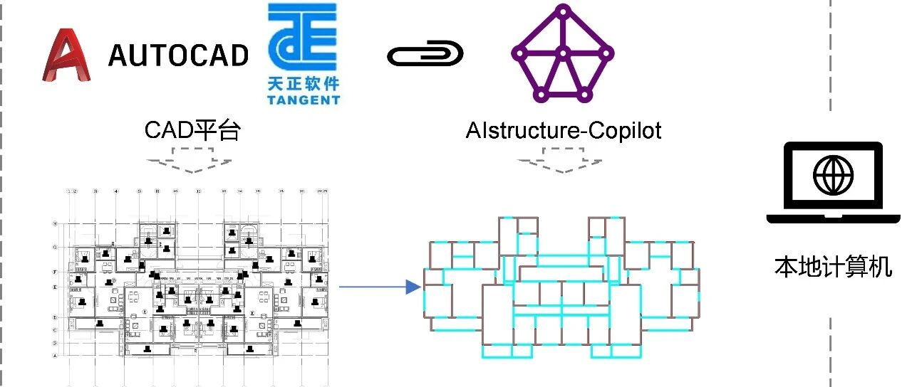

AIstructure-Copilot-v0.1.1功能更新：1次设计，2个方案，3套模型
【3分钟简介视频】
0
太长不看版
AIstructure-Copilot-v0.1.1更新。目前，我们已基本实现1次设计，2个方案，3套模型的功能。
即对1个建筑设计方案进行前处理；采用智能生成算法可同时给出2个方案设计，分别为GAN和GNN的设计；随后可输出建模参数，采用我们提供的开源代码，建立PKPM、ETABS、YJK软件3套模型。

1次设计，2个方案，3套模型
下载地址：https://ai-structure.com/backend/struct/downloadAIstructure
也可进入合木智构网站（https://ai-structure.com/#/IntelligentDesign）进行下载
如果您此前对AIstructure-Copilot尚不了解，欢迎您阅读本文第一部分《AIstructure-Copilot产品简介》。
如果您已经是AIstructure-Copilot的老用户，欢迎您阅读本文的第二部分《AIstructure-Copilot-v0.1.1的新功能》。
如果您是AIstructure-Copilot的深度二次开发用户，欢迎您阅读本文的第三部分《AIstructure-Copilot的二次开发最新支持》。
1
AIstructure-Copilot 产品简介
7月11日，我们发布了AIstructure-Copilot-v0.1.0，将所有AI设计流程集成至CAD界面，梳理了设计流程，实现了更加便捷的操作和交互性，无需繁复的多平台切换与上传下载操作，实现5 min完成剪力墙结构方案的智能设计（详见：AIstructure-Copilot：嵌入CAD平台的结构智能设计助手）。
AIstructure-Copilot得到了更多工程师的试用，目前可统计的用户设计项目已超过800项。同时也收到了更多的改进意见，我们对此进行了改进和完善，欢迎大家继续试用。
AIstructure-Copilot工作流程如下图所示，其操作流程为：
(1)首先在ai-structure.com网站上注册用户，然后下载AIstructure-Copilot程序（免费），安装AIstructure.exe程序；安装完成后打开CAD界面，便可看到菜单栏中出现AIstructure。
(2)然后在CAD界面中对建筑平面设计结果进行前处理，之后点击“剪力墙智能设计”菜单，程序将自动与服务器交互完成AI结构设计工作，并将AI设计结果下载至本地。
(3)基于我们提供的开源代码，可以基于AI设计结果自动建立PKPM、ETABS或YJK软件模型。

全新工作流程：在本地计算机便可实现
大家在做设计时，往往希望对方可以多提供几个方案供挑选，AIstructure-Copilot就提供了这样的功能。AIstructure-Copilot可以同时生成基于生成对抗网络算法（GAN）和图神经网络算法（GNN）两种不同深度学习算法的方案。目前看GAN和GNN虽然算法原理差异很大，但生成的结果却可谓一时瑜亮，难以直接判定哪个更好，因此，我们将选择权交由工程师决定。AIstructure-Copilot同时生成GAN和GNN两种设计，供工程师们选择和调整。毕竟AI完成一个结构方案设计实际上用时不到10s，多做一个方案也就多花10s时间而已。

采用不同算法生成的2个剪力墙结构设计方案
2
AIstructure-Copilot-v0.1.1的新功能
2.1 工程师交互调整
【用户意见】生成的双线图不利于调整和改进，且生成的剪力墙有不合适的地方，无法调整剪力墙后再根据新的剪力墙布置进行梁生成。
【软件改进】在AIstructure-Copilot生成剪力墙设计后，全部采用单线绘制。并且，工程师可手动进行优化调整，随后再基于调整后的剪力墙设计进行梁构件智能设计生成。以下是典型的案例：
首先，AIstructure-Copilot直接生成剪力墙布置图，如下图(a)所示，其中可能有部分剪力墙布置不够合理；随后，工程师对生成的剪力墙布置进行手动调整，调整后如下图4(b)所示；最后基于调整后的剪力墙布置和建筑构件布置，生成梁布置设计，如下图4(c)所示。

(a) 剪力墙设计（未手动修改）

(b) 剪力墙设计
（手动修改，紫色圈出为剪力墙调整部分）

(c) 剪力墙-梁设计
（手动修改剪力墙后的梁布置设计）
2.2 轴线颜色区分
【用户意见】GANIO_WALL_Move与GANIO_WALL颜色应不同。
【软件改进】将GANIO_WALL_Move图层置为灰色，便于工程师根据经验判断哪些是可移动隔墙的轴线。

轴线颜色区分
2.2 新增剪力墙、梁构件截面尺寸自定义选项
【用户意见】用于建模的剪力墙和梁构件截面尺寸，能否由工程师自己设定？
【软件改进】新增加了用户自定义剪力墙和梁构件截面尺寸的输入框，默认值为“-1”，若不更改，则程序根据设计条件自动生成对应尺寸。梁宽度与剪力墙厚度一致。

参数设计改进
2.4 梁的智能设计功能由本地CAD插件执行改为云端API执行
为便于后续更快、更好的根据工程师建议，对智能设计算法进行更新和维护，将梁布置的智能设计置于云端执行。
3
AIstructure-Copilot的二次开发最新支持
数据格式统一为JSON，便于数据解译与个性化使用
【用户意见】gdt文件并非常规的数据格式，用于建模时，难以有效解析.gdt文件中的数据含义。
【软件改进】为了更好的在多个平台之间进行数据的传递和使用，便于工程师解读AI设计结果，我们将所有的数据变更为标准化的JSON格式。
（1）建筑设计前处理后，传递给AIstructure-Copilot智能设计采用的是建筑信息JSON数据；
（2）剪力墙-梁结构设计后，传递给结构自动建模开源代码的则是建筑-结构信息JSON数据；
（3）目前，开源代码自动生成剪力墙结构模型的代码，已修改为JSON格式数据输入。

可采用JSON在线转化工具进行数据解析，清楚了解数据内容。
4
结语
在7月份AIstructure-Copilot-v0.1.0上线以来，得到了更多工程师的试用，目前可统计的用户设计项目已超过800项。我们不断针对用户提出的问题进行改进，并进一步完善软件输入输出功能。
未来，我们还将在此基础上进一步进行开发，尽快上线新功能，请各位用户持续关注，多多支持！
温馨提示：为更好使用AI设计工具，请仔细阅读使用说明书。
联系方式
QQ群，AI-structure-交流群：741840451
ai-structure.com：剪力墙结构材料用量AI预测模块上线测试(20230731)
AIstructure-Copilot：嵌入CAD平台的结构智能设计助手(20230711)
建筑结构生成式智能设计在日内瓦国际发明展上获“评审团特别嘉许金奖”(20230519)
ai-structure.com：土木工程自然语言规则AI解译模块上线测试(20230513)
AI剪力墙设计问卷调查结果(20230508)
相关论文
Liao WJ, Lu XZ, Huang YL, Zheng Z, Lin YQ, Automated structural design of shear wall residential buildings using generative adversarial networks, Automation in Construction, 2021, 132, 103931. DOI: 10.1016/j.autcon.2021.103931.
Lu XZ, Liao WJ, Zhang Y, Huang YL, Intelligent structural design of shear wall residence using physics-enhanced generative adversarial networks, Earthquake Engineering & Structural Dynamics, 2022, 51(7): 1657-1676. DOI: 10.1002/eqe.3632.
Zhao PJ, Liao WJ, Xue HJ, Lu XZ, Intelligent design method for beam and slab of shear wall structure based on deep learning, Journal of Building Engineering, 2022, 57: 104838. DOI: 10.1016/j.jobe.2022.104838.
Liao WJ, Huang YL, Zheng Z, Lu XZ, Intelligent generative structural design method for shear-wall building based on “fused-text-image-to-image” generative adversarial networks, Expert Systems with Applications, 2022, 118530, DOI: 10.1016/j.eswa.2022.118530.
Fei YF, Liao WJ, Zhang S, Yin PF, Han B, Zhao PJ, Chen XY, Lu XZ, Integrated schematic design method for shear wall structures: a practical application of generative adversarial networks, Buildings, 2022, 12(9): 1295. DOI: 10.3390/buildings1209129.
Fei YF, Liao WJ, Huang YL, Lu XZ, Knowledge-enhanced generative adversarial networks for schematic design of framed tube structures, Automation in Construction, 2022, 144: 104619. DOI: 10.1016/j.autcon.2022.104619.
Zhao PJ, Liao WJ, Huang YL, Lu XZ, Intelligent design of shear wall layout based on attention-enhanced generative adversarial network, Engineering Structures, 2023, 274, 115170. DOI: 10.1016/j.engstruct.2022.115170.
Zhao PJ, Liao WJ, Huang YL, Lu XZ, Intelligent beam layout design for frame structure based on graph neural networks, Journal of Building Engineering, 2023, 63, Part A: 105499. DOI: 10.1016/j.jobe.2022.105499.
Zhao PJ, Liao WJ, Huang YL, Lu XZ, Intelligent design of shear wall layout based on graph neural networks, Advanced Engineering Informatics, 2023, 55, 101886, DOI: 10.1016/j.aei.2023.101886
Liao WJ, Wang XY, Fei YF, Huang YL, Xie LL, Lu XZ*, Base-isolation design of shear wall structures using physics-rule-co-guided self-supervised generative adversarial networks, Earthquake Engineering & Structural Dynamics, 2023, DOI:10.1002/eqe.3862.
Feng YT, Fei YF, Lin YQ, Liao WJ, Lu XZ, Intelligent generative design for shear wall cross-sectional size using rule-Embedded generative adversarial network, Journal of Structural Engineering-ASCE, 2023, 149(11). 04023161. DOI:10.1061/JSENDH.STENG-12206.

学术报告视频
公众号文章
---End--